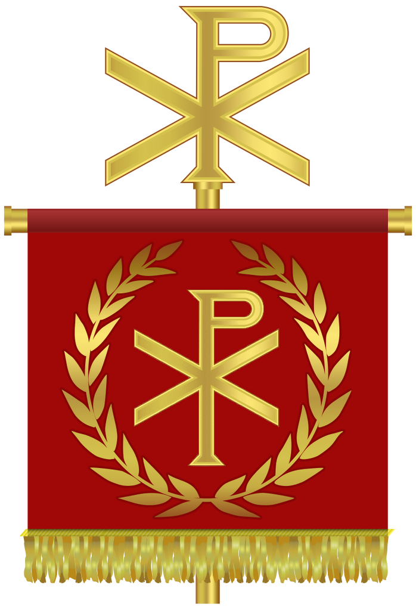

Origen de Italia

El nombre de Italia ha sido usado desde antiguo, al menos desde el siglo VIII a. C., inicialmente para designar a las regiones del sur y del centro de la que se conoce como península itálica, haciendo referencia a los pueblos itálicos, hablantes de las lenguas llamadas igualmente. La etimología del nombre es incierta: Pallottino defiende que deriva del gentilicio de uno de los pueblos itálicos nativos de la región de Calabria, los (v)itàlii, el cual mutua su nombre de su animal sagrado: el ternero (viteliú en idioma osco, vitulus en latín y vitello en italiano); y que fue usado por los antiguos griegos como término general para designar a los habitantes de toda la península.
Primeras monedas Italianas

El nombre de Italia fue usado también en monedas acuñadas por la coalición de los aliados itálicos (socii) descontentos por no haber aún recibido la ciudadanía romana, a pesar de la fundamental contribución ofrecida para la conquista de las provincias (al tiempo la ciudadanía romana había sido otorgada a muchas ciudades dentro de Italia, pero todavía no a todas, y era aún totalmente inexistente en los territorios fuera de Italia, que eran las provincias), que se declaró independiente; es decir, la coalición de los socios itálicos insatisfechos, compuesta por habitantes de ciudades samnitas, picenas, apulias y sabinas, entre otras, se levantó contra Roma y los demás centros itálicos ya provistos de ciudadanía, en el siglo I a. C., y desplazó la capital de Italia, de Roma a Corfinium (hoy Corfinio), rebautizada Itálica, con la intención de erigir el Senado en ella y acuñando monedas, las cuales llevaban imprimida la escrita Italia, y marcando así el comienzo de la guerra Social (guerra de los aliados),13 o sea, la guerra entre Roma y las demás ciudades itálicas ya provistas de ciudadanía romana contra sus aliados itálicos desprovistos de ciudadanía, a la que se puso fin en el año 89 a. C.
Caída del Imperio romano
Tras la caída del Imperio romano de Occidente, la palabra Italia, además de hacer referencia al Reino ostrogodo de Italia y al Exarcado bizantino de Italia, siguió, en el curso de los siglos, designando al conjunto de Estados, reinos y repúblicas que poblaban el antiguo territorio de la Italia romana y que compartían una cierta afinidad cultural, histórica y lingüística, además de geográfica, destacando especialmente un mismo conjunto de dialectos del latín, las lenguas italorromances (y el subgrupo de las lenguas galoitálicas), que darían origen al idioma italiano; mientras, siempre en la alta Edad Media, el antiguo gentilicio de itálico se convirtió en italiano, quedando el primero como referencia para todos los habitantes de la Italia romana y prerromana, hablantes antiguos idiomas itálicos (como el latín), y el segundo como referencia para todos los habitantes de Italia hablantes lenguas neolatinas contemporáneas (como el italiano), es decir, desde la época medieval en adelante 